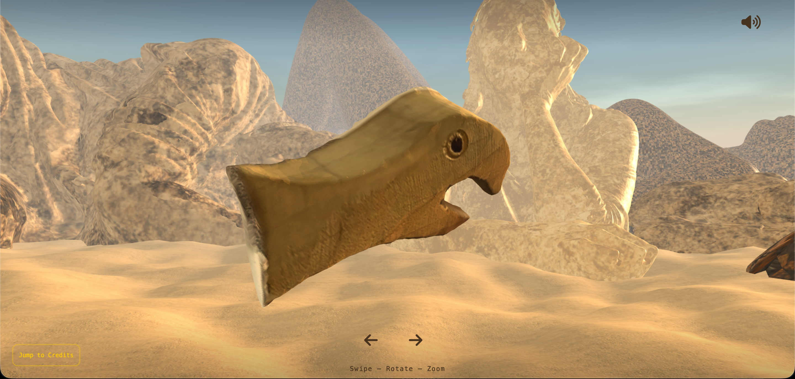
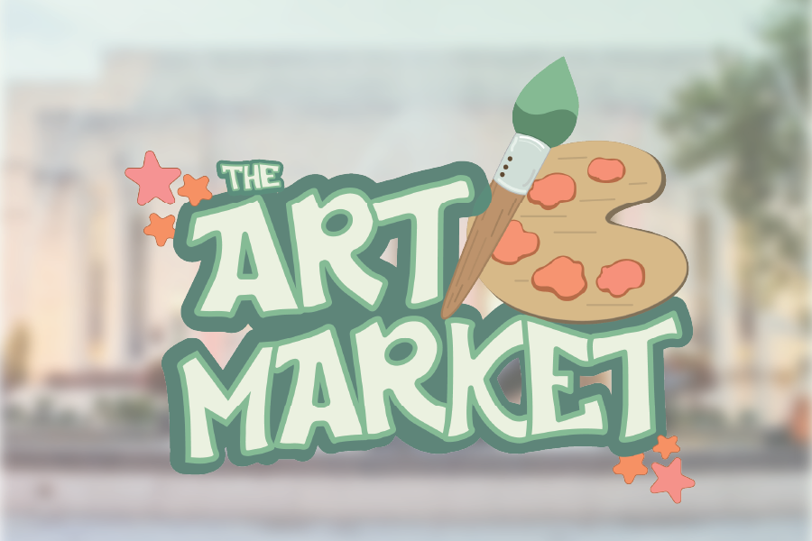
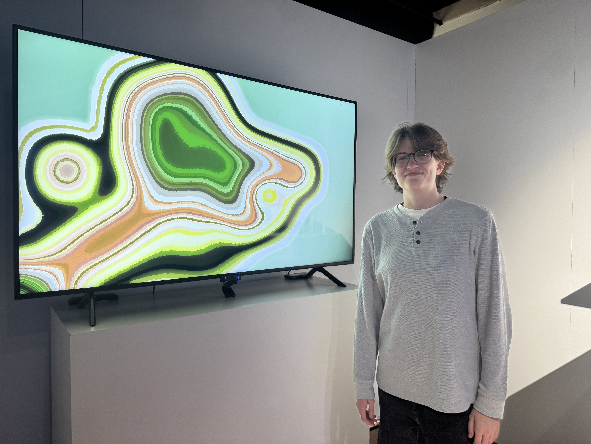

The Art Market
Capstone Project 2026, Planned and built a full stack web system with the simple idea of growth. Our idea surrounded selling or buying used art supplies
View Project →
Visual Field
Audiences shape a dynamic color space rendered with lines evoking topographical maps and nautical charts. Guided by visible gestures, participants expand, contract, and manipulate the central orb, engaging in a real-time dialogue of action and reflection.
View Project →